![[Publications]](/gifs/pu_back.gif)
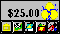
Figure 1 - ecash status window
While ecash is running, a small window is displayed that shows her the amount of ecash coins which are stored on her hard disk and are available to be spent. The optional toolbar allows her to access various functions.
The screen below shows the actual dialog box used to withdraw ecash (Version 2.1 of the actual MS Windows ecash client is shown throughout). This window appears when the Mint icon has been clicked on the toolbar. Alice simply enters the amount to be withdrawn from her account and clicks the 'OK' button. This amount of ecash is then downloaded from her ecash account at the Mint to her hard disk.
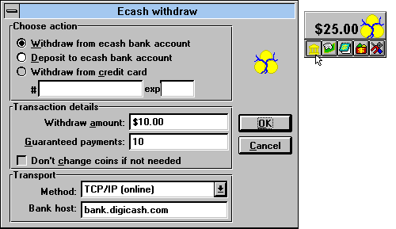
Figure 2 - Alice withdrawing ecash
Responding to a Payment Request
Bob has sent a payment request to Alice because she has asked to buy something from him. (The merchants' Purse software will generate and send such requests). For example, in the dialog box below, Alice is being asked to make a payment of $0.02 to participate in a tic-tac-toe game. If she agrees to make the payment, she just clicks on the 'Yes' button. Similarly, clicking the 'No' button will refuse the payment.
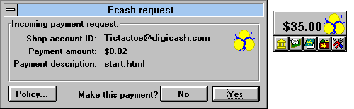
Figure 3 - Alice gets an incoming payment request
According to her preferences, Alice may also instruct her system
to respond automatically to similar payment requests in the future.
When the Policy button is clicked (see window above), the dialog
box is extended downwards (see window below). Alice can now set
the policy under which payment requests are to be answered automatically.
These extra settings can be used to simplify certain repetitive
payments.
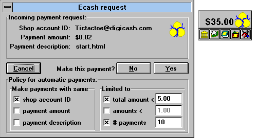
Figure 4 - Alice setting the policy for performing subsequent payments automatically
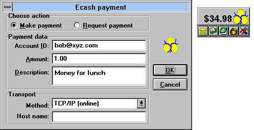
Figure 5 - outgoing payment to Bob from Alice
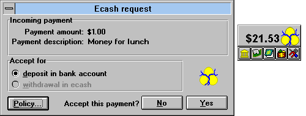
Figure 6 - Bob gets an incoming payment
Just as Alice could set a policy for payment requests, Bob can also set a simple policy which automatically accepts subsequent incoming payments.
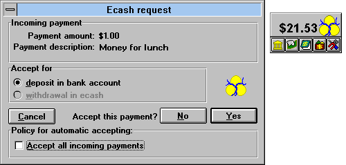
Figure 7 - Bob sets a policy to accept payments automatically
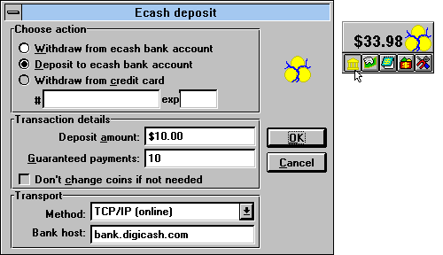
Figure 8 - Alice deposits some ecash in her account
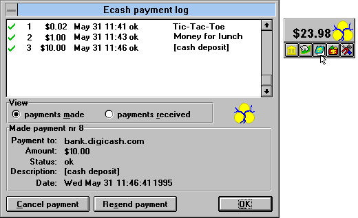
Figure 9 - The debit colunm of Alice's digital statement
To show how it all works we'll explain how a withdrawal works, then follow the ecash in a payment to a merchant. Combining these two transactions, we can then understand why the customer perceives that ecash is paid from person to person without involving any bank. Finally the withdrawal is explained in greater detail to illustrate the 'blind signature' concept, which is the foundation of the privacy feature, and explain why the bank cannot trace it's own money!
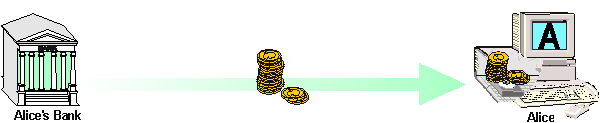
Figure 10 - Alice withdraws ecash from her bank account
No physical coins are involved in the actual system of course, but the messages include strings of digits, and each string corresponds to a different digital coin. Each coin has a denomination, or value, so that a purse of digital coins is managed automatically by Alice's ecash software. It decides which denominations to withdraw and which to spend in particular payments. (The ecash software keeps plenty of 'small change', but will prompt the user to contact the bank in the rare event that more change is needed before the next payment, to restructure its purse of coin denominations.)
Having received a payment request from Bob, she agrees by ticking the 'Yes' box. Her ecash software chooses coins with the desired total value from the purse on her hard disk. Then it removes these coins and sends them over the network to Bob's shop. When it receives the coins, Bob's software automatically sends them on to the bank and waits for acceptance before sending the goods to Alice along with a receipt.
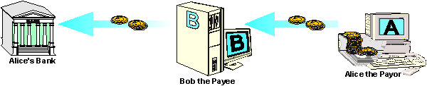
Figure 11 - Alice buys something from Bob
To ensure that each coin is used only once, the bank records the serial number of each coin in its spent coin database. If the coin serial number is already recorded, the bank has detected someone trying to spend the coin more than once and informs Bob that it is a worthless copy. If, as will be the usual case, no such serial number has been recorded, the bank stores it at that position and informs Bob that the coin is valid and the deposit is accepted.
The only difference between this payment from Alice to another consumer, Cindy, and the one Alice paid to Bob's shop in Figure 11, is what happens after the bank accepts the cash. In Figure 12, Cindy has configured her software to request the bank to withdraw the ecash she has just deposited and send it back to her PC as soon as the coins are accepted. (Actually Cindy's bank will check with Alice's bank to make sure that the coins deposited are good.) Now when Alice sends Cindy five dollars, new coins are immediately available to spend from Cindy's PC.
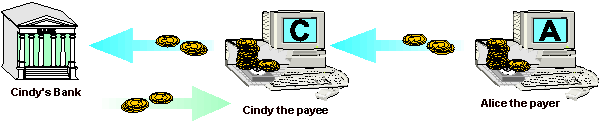
Figure 12 - person-to-person payment
By using 'blind signatures, a feature unique to ecash, the bank can be prevented from recognizing the coins as having come from a particular account. The idea is shown in Figure 13. Instead of the bank creating a blank coin, Alice's computer creates the coin itself at random. Then it hides the coin in a special digital envelope and sends it off to the bank. The bank withdraws one dollar from Alice's account and makes its special 'worth-one-dollar' digital validation like an embossed stamp on the envelope before returning it to Alice's computer.
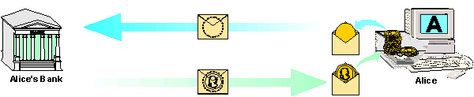
Figure 13 - Alice sends her coin for signature by the bank
Like an emboss, the blind signature mechanism lets the validating signature be applied through the envelope. When Alice's computer removes the envelope, it has obtained a coin of its own choice, validated by the bank's stamp. When she spends the coin, the bank must honor it and accept it as a valid payment because of the stamp. But because the bank is unable to recognize the coin, since it was hidden in the envelope when it was stamped, the bank cannot tell who made the payment. The bank which signed can verify that it made the signature, but it cannot link it back to a particular object or owner.
As can be seen in the top of Figure 14, the first step in each case occurs when value comes out of a customer's account. In an ATM transaction, the cash given to the consumer constitutes a reduction in vault cash. In an ecash withdrawal, however, the value is moved within the bank and becomes an ecash liability that will be reversed when the ecash is presented for deposit.
The second step is the spending of the value, where cash and ecash are very similar. In each case the merchant (or other party receiving it) can choose to be issued with new cash coins or can make a deposit to an ecash account.
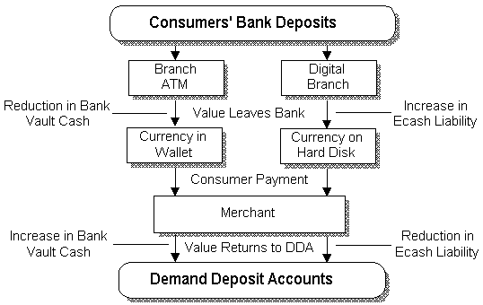
Figure 14 - ecash flow
When the merchant takes the final step and deposits the traditional cash, it constitutes an increase in vault cash, whereas deposit of ecash reduces the ecash liability and increases deposit liability.
The chart below shows in more detail the difference in the actual transaction path for a 'hard cash' payment (on the left) and a digital cash payment, on the right
While the main difference is invisible to the consumer, it is vitally necessary to protect the integrity of ecash. When a digital coin is received as payment it must be surrendered to the bank who will exchange it for an account credit or for freshly minted ecash.
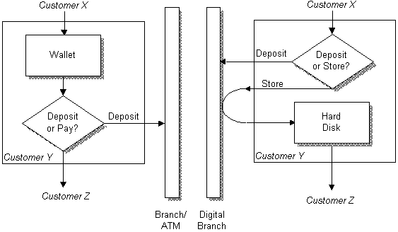
Figure 15 - cash flow / ecash flow
![[DigiCash home]](/gifs/hm_back.gif)